<!doctype html>


  


<html class="theme-next mist use-motion">
<head>
  <meta charset="UTF-8"/>
<meta http-equiv="X-UA-Compatible" content="IE=edge,chrome=1" />
<meta name="viewport" content="width=device-width, initial-scale=1, maximum-scale=1"/>


<meta http-equiv="Cache-Control" content="no-transform" />
<meta http-equiv="Cache-Control" content="no-siteapp" />


  <meta name="google-site-verification" content="iFYOZeAkjA9mpw80K_6C3Ybqm8zAmrJ3XXy5cSphRew" />


  
  
  <link href="/vendors/fancybox/source/jquery.fancybox.css?v=2.1.5" rel="stylesheet" type="text/css" />


  
  
  
  

  
    
    
  

  

  

  

  

  
    
    
    <link href="//fonts.googleapis.com/css?family=Lato:300,300italic,400,400italic,700,700italic&subset=latin,latin-ext" rel="stylesheet" type="text/css">
  


<link href="/vendors/font-awesome/css/font-awesome.min.css?v=4.4.0" rel="stylesheet" type="text/css" />

<link href="/css/main.css?v=5.0.1" rel="stylesheet" type="text/css" />


  <meta name="keywords" content="Dapr,K8S,AKS,ASP.NET Core,Microservice," />


  <link rel="shortcut icon" type="image/x-icon" href="/favicon.ico?v=5.0.1" />


<meta name="description" content="前言繼，前面幾篇記錄了ㄧ些關於最近遇到的一些問題紀錄，終於要開始寫本年度的第一篇技術文了！ ( 希望不要也是最後一篇 QQ )。總之，趁著最近有一點寫文章的 feel，就加緊寫吧，不然垃圾場不止有垃圾，也都長草了 QQ.. Dapr今天要介紹的是，登登登，Dapr !! 什麼是 Dapr , 就是 Distributed Application Runtime !! ( 不要問我那個 p 在哪裏.">
<meta property="og:type" content="article">
<meta property="og:title" content="Dapr - Hello Dapr">
<meta property="og:url" content="http://skychang.github.io/2020/03/13/Dapr-Hello_Dapr/index.html">
<meta property="og:site_name" content="天空的垃圾場">
<meta property="og:description" content="前言繼，前面幾篇記錄了ㄧ些關於最近遇到的一些問題紀錄，終於要開始寫本年度的第一篇技術文了！ ( 希望不要也是最後一篇 QQ )。總之，趁著最近有一點寫文章的 feel，就加緊寫吧，不然垃圾場不止有垃圾，也都長草了 QQ.. Dapr今天要介紹的是，登登登，Dapr !! 什麼是 Dapr , 就是 Distributed Application Runtime !! ( 不要問我那個 p 在哪裏.">
<meta property="og:locale" content="zh_TW">
<meta property="og:image" content="http://skychang.github.io/2020/03/13/Dapr-Hello_Dapr/01.png">
<meta property="og:image" content="http://skychang.github.io/2020/03/13/Dapr-Hello_Dapr/overview.png">
<meta property="og:image" content="http://skychang.github.io/2020/03/13/Dapr-Hello_Dapr/overview-sidecar.png">
<meta property="og:image" content="http://skychang.github.io/2020/03/13/Dapr-Hello_Dapr/overview-sidecar-kubernetes.png">
<meta property="og:image" content="http://skychang.github.io/2020/03/13/Dapr-Hello_Dapr/02.png">
<meta property="og:image" content="http://skychang.github.io/2020/03/13/Dapr-Hello_Dapr/02.png">
<meta property="og:image" content="http://skychang.github.io/2020/03/13/Dapr-Hello_Dapr/Architecture_Diagram.png">
<meta property="og:image" content="http://skychang.github.io/2020/03/13/Dapr-Hello_Dapr/04.png">
<meta property="og:image" content="http://skychang.github.io/2020/03/13/Dapr-Hello_Dapr/05.png">
<meta property="og:image" content="http://skychang.github.io/2020/03/13/Dapr-Hello_Dapr/06.png">
<meta property="og:image" content="http://skychang.github.io/2020/03/13/Dapr-Hello_Dapr/07.png">
<meta property="og:image" content="http://skychang.github.io/2020/03/13/Dapr-Hello_Dapr/08.png">
<meta property="og:image" content="http://skychang.github.io/2020/03/13/Dapr-Hello_Dapr/09.png">
<meta property="og:image" content="http://skychang.github.io/2020/03/13/Dapr-Hello_Dapr/Architecture_Diagram_B.png">
<meta property="og:image" content="http://skychang.github.io/2020/03/13/Dapr-Hello_Dapr/10.png">
<meta property="og:image" content="http://skychang.github.io/2020/03/13/Dapr-Hello_Dapr/11.png">
<meta property="og:image" content="http://skychang.github.io/2020/03/13/Dapr-Hello_Dapr/service-invocation.png">
<meta property="article:published_time" content="2020-03-13T22:31:00.000Z">
<meta property="article:modified_time" content="2020-05-27T12:09:38.888Z">
<meta property="article:author" content="Sky Chang">
<meta property="article:tag" content="Dapr">
<meta property="article:tag" content="K8S">
<meta property="article:tag" content="AKS">
<meta property="article:tag" content="ASP.NET Core">
<meta property="article:tag" content="Microservice">
<meta name="twitter:card" content="summary">
<meta name="twitter:image" content="http://skychang.github.io/2020/03/13/Dapr-Hello_Dapr/01.png">


<script type="text/javascript" id="hexo.configuration">
  var NexT = window.NexT || {};
  var CONFIG = {
    scheme: 'Mist',
    sidebar: {"position":"left","display":"post"},
    fancybox: true,
    motion: true,
    duoshuo: {
      userId: 0,
      author: '博主'
    }
  };
</script>

  <title> Dapr - Hello Dapr | 天空的垃圾場 </title>
<meta name="generator" content="Hexo 4.2.1"></head>

<body itemscope itemtype="http://schema.org/WebPage" lang="zh-tw">

  


<script>
  (function(i,s,o,g,r,a,m){i['GoogleAnalyticsObject']=r;i[r]=i[r]||function(){
            (i[r].q=i[r].q||[]).push(arguments)},i[r].l=1*new Date();a=s.createElement(o),
          m=s.getElementsByTagName(o)[0];a.async=1;a.src=g;m.parentNode.insertBefore(a,m)
  })(window,document,'script','//www.google-analytics.com/analytics.js','ga');
  ga('create', 'UA-29938905-2', 'auto');
  ga('send', 'pageview');
</script>


  
  
    
  

  <div class="container one-collumn sidebar-position-left page-post-detail ">
    <div class="headband"></div>

    <header id="header" class="header" itemscope itemtype="http://schema.org/WPHeader">
      <div class="header-inner"><div class="site-meta ">
  

  <div class="custom-logo-site-title">
    <a href="/"  class="brand" rel="start">
      <span class="logo-line-before"><i></i></span>
      <span class="site-title">天空的垃圾場</span>
      <span class="logo-line-after"><i></i></span>
    </a>
  </div>
  <p class="site-subtitle"></p>
</div>

<div class="site-nav-toggle">
  <button>
    <span class="btn-bar"></span>
    <span class="btn-bar"></span>
    <span class="btn-bar"></span>
  </button>
</div>

<nav class="site-nav">
  

  
    <ul id="menu" class="menu">
      
        
        <li class="menu-item menu-item-home">
          <a href="/" rel="section">
            
              <i class="menu-item-icon fa fa-fw fa-home"></i> <br />
            
            首頁
          </a>
        </li>
      
        
        <li class="menu-item menu-item-development">
          <a href="/development" rel="section">
            
              <i class="menu-item-icon fa fa-fw fa-question-circle"></i> <br />
            
            開發
          </a>
        </li>
      
        
        <li class="menu-item menu-item-alm">
          <a href="/alm" rel="section">
            
              <i class="menu-item-icon fa fa-fw fa-question-circle"></i> <br />
            
            維運
          </a>
        </li>
      
        
        <li class="menu-item menu-item-cloud">
          <a href="/cloud" rel="section">
            
              <i class="menu-item-icon fa fa-fw fa-question-circle"></i> <br />
            
            雲端
          </a>
        </li>
      
        
        <li class="menu-item menu-item-archives">
          <a href="/archives" rel="section">
            
              <i class="menu-item-icon fa fa-fw fa-archive"></i> <br />
            
            歸檔
          </a>
        </li>
      
        
        <li class="menu-item menu-item-tags">
          <a href="/tags" rel="section">
            
              <i class="menu-item-icon fa fa-fw fa-tags"></i> <br />
            
            標籤
          </a>
        </li>
      

      
    </ul>
  

  
</nav>

 </div>
    </header>

    <main id="main" class="main">
      <div class="main-inner">
        <div class="content-wrap">
          <div id="content" class="content">
            

  <div id="posts" class="posts-expand">
    

  
  

  
  
  

  <article class="post post-type-normal " itemscope itemtype="http://schema.org/Article">

    
      <header class="post-header">

        
        
          <h1 class="post-title" itemprop="name headline">
            
            
              
                Dapr - Hello Dapr
              
            
          </h1>
        

        <div class="post-meta">
          <span class="post-time">
            <span class="post-meta-item-icon">
              <i class="fa fa-calendar-o"></i>
            </span>
            <span class="post-meta-item-text">發表於</span>
            <time itemprop="dateCreated" datetime="2020-03-13T22:31:00+00:00" content="2020-03-13">
              2020-03-13
            </time>
          </span>

          

          
            
              <span class="post-comments-count">
                &nbsp; | &nbsp;
                <a href="/2020/03/13/Dapr-Hello_Dapr/#comments" itemprop="discussionUrl">
                  <span class="post-comments-count disqus-comment-count" data-disqus-identifier="2020/03/13/Dapr-Hello_Dapr/" itemprop="commentsCount"></span>
                </a>
              </span>
            
          

          

          
          

          
        </div>
      </header>
    


    <div class="post-body" itemprop="articleBody">

      
      

      
        <h2 id="前言"><a href="#前言" class="headerlink" title="前言"></a>前言</h2><p>繼，前面幾篇記錄了ㄧ些關於最近遇到的一些問題紀錄，終於要開始寫本年度的第一篇技術文了！ ( 希望不要也是最後一篇 QQ )。<br>總之，趁著最近有一點寫文章的 feel，就加緊寫吧，不然垃圾場不止有垃圾，也都長草了 QQ..</p>
<h2 id="Dapr"><a href="#Dapr" class="headerlink" title="Dapr"></a>Dapr</h2><p>今天要介紹的是，登登登，Dapr !!</p>
<p>什麼是 <a href="https://dapr.io/" target="_blank" rel="noopener">Dapr</a> , 就是 Distributed Application Runtime !! ( 不要問我那個 p 在哪裏..)，他是由微軟發展出來，純 Open Source 的專案 ( 而且星星數也破 5xxx 了!! )，專門用來處理開發人員搞 Microservice 時，遇到的一些問題。</p>
<p>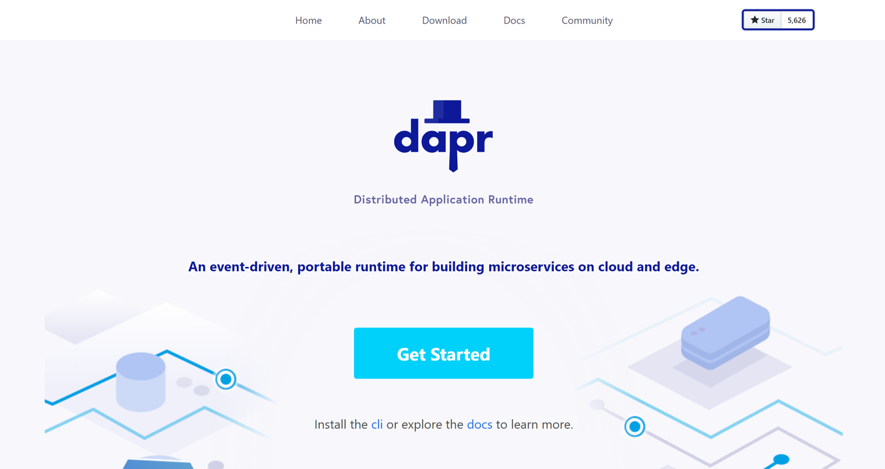</p>
<h3 id="Dapr-的功能"><a href="#Dapr-的功能" class="headerlink" title="Dapr 的功能"></a>Dapr 的功能</h3><p>那他有什麼強大的功能呢！！？</p>
<ul>
<li>簡單就可以處理 Event-Driven</li>
<li>能建構出 Stateful 的 Microservice</li>
<li>可以放到雲端環境和 Edge</li>
<li>支援眾多語言! ( 連提供的 Demo 都不是用 C# 呢 泣)</li>
</ul>
<p>而且，他支援任何語言，任何平台，透過 http / gRPC 來調用中間 Dapr 的服務，所以你可以想像，你想要執行的服務 ( ex: 儲存到 Readis )，就不需要使用 Redis 的 SDK，或是 Redis 特定的呼叫方式。只需要透過 http / gRPC 的調用，就可以將東西存到 Redis 上。當然如有時候使用 http / gRPC 還是很麻煩，所以 Dapr 也提供了多語言版本的 SDK，讓你使用上更方便，如下圖。</p>
<p></p>
<p>當然，他實際上不像 Istio 那樣，可以不用改 Code：就可以把原有的程式碼套上去，就像剛剛上面說的，從 Redis 的 SDK 改成呼叫 Dapr 的 SDK，還是有部分需要去處理，所以，如果不想改 Code，就想使用，是有難度低～ ( 當然以前切分的好，現在要轉上去也容易了 )</p>
<p>Dapr 提供的功能，如下 ( 寫這篇文章為 0.5 版本 )</p>
<p>！<a href="building_blocks.png"></a></p>
<ul>
<li>Service Invocation : 提供了 Service To Service 的服務，包含重試，位置的導向等等。</li>
<li>State Management : 搭配 Key/Value 來進行狀態的管理，可以輕鬆地將長期運行，讓你的應用程式擁有高可用性之有狀態服務與無狀態服務。狀態存儲是可注入的，可以使用 Azure CosmosDB，AWS DynamoDB 或 Redis 來進行搭配。</li>
<li>Publish and Subscribe Messaging : 輕鬆地使用發布事件，和訂閱事件的能力。</li>
<li>Resource Bindings    : Event-driven 的架構，可綁定 Resource，當發生事件的時候，就自動觸發。</li>
<li>Distributed Tracing : 提供了分散式的 Trace 和簡單的記錄查找</li>
<li>Actors : 可以使用 Actor 模式，此模式針對有狀態和無狀態對象來設計，通過方法和狀態封裝使操作變得簡單。Dapr 在其 actor 運行時中提供了許多功能，包括並發，狀態，actor 激活/停用 的生命週期管理以及計時器、喚醒等。</li>
</ul>
<p>而本篇文章的 Hello World 會使用到 Service Invocation 和 State Management。</p>
<h3 id="Dapr-和-Sidecar"><a href="#Dapr-和-Sidecar" class="headerlink" title="Dapr 和 Sidecar"></a>Dapr 和 Sidecar</h3><p>基本上 Dapr 也是 Sidecar 模式的操作方式，所以很多人會拿 Dapr 和 Istio 相比，雖然兩個都是 Sidecar 模式，但 Dapr 重心放在服務的調用而 Istio 怎放在網路層的監控與管理。</p>
<p></p>
<p>如果是 K8S 的架構，當然就是包在一個 Pod 裡面了。</p>
<p>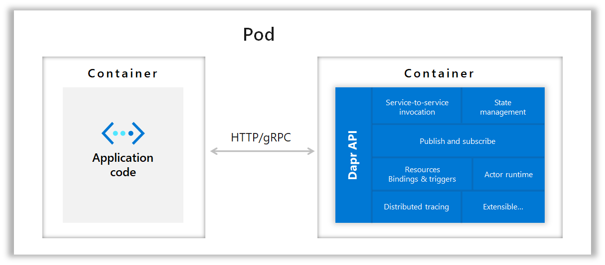</p>
<p>提外話，去年 Study4.TW 的 dotnet Conf，Alan Liu 的 Session 最後也有提到喔！！！有興趣也可以去看看影片。</p>
<h2 id="Dapr-環境準備"><a href="#Dapr-環境準備" class="headerlink" title="Dapr 環境準備"></a>Dapr 環境準備</h2><p>首先，開始式前，當然要先準備環境。Dapr 基本上可以 run 在 local ( 獨立模式，非 K8S 底下)，或是 K8S 底下 ( AKS 也通 )。</p>
<p>通常獨立模式，主要給開發使用，然後再部署到正式 ( K8S / AKS ) 環境。</p>
<p>當然，這東西，主要還是以 Container 為主，所以 Docker 是跑不掉的~~</p>
<h3 id="安裝-Dapr-CLI"><a href="#安裝-Dapr-CLI" class="headerlink" title="安裝 Dapr CLI"></a>安裝 Dapr CLI</h3><p>目前都是透過指令安裝，未來可能會改變，建議參考<a href="https://github.com/dapr/docs/blob/master/getting-started/environment-setup.md#environment-setup" target="_blank" rel="noopener">官方文件</a></p>
<p>Windows -  安裝 Dapr CLI 到 C:\dapr 和加到 $PATH 路徑</p>
<figure class="highlight ps"><table><tr><td class="gutter"><pre><span class="line">1</span><br></pre></td><td class="code"><pre><span class="line">powershell <span class="literal">-Command</span> <span class="string">"iwr -useb https://raw.githubusercontent.com/dapr/cli/master/install/install.ps1 | iex"</span></span><br></pre></td></tr></table></figure>

<p>MacOs - 安裝 Dapr CLI 到 /usr/local/bin</p>
<figure class="highlight shell"><table><tr><td class="gutter"><pre><span class="line">1</span><br></pre></td><td class="code"><pre><span class="line">curl -fsSL https://raw.githubusercontent.com/dapr/cli/master/install/install.sh | /bin/bash</span><br></pre></td></tr></table></figure>

<p>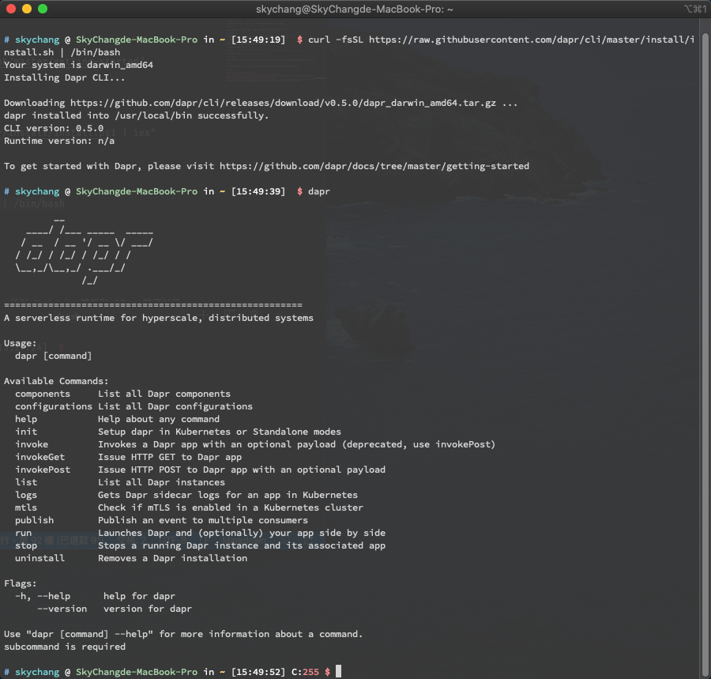</p>
<p>當然，你也可以手動下載…..</p>
<h3 id="安裝標準環境"><a href="#安裝標準環境" class="headerlink" title="安裝標準環境"></a>安裝標準環境</h3><figure class="highlight bash"><table><tr><td class="gutter"><pre><span class="line">1</span><br></pre></td><td class="code"><pre><span class="line">dapr init</span><br></pre></td></tr></table></figure>

<p>當輸入完後，會產生兩個 Container。沒錯，他背後就是 Container，所以對環境來說，真的很乾淨..</p>
<p></p>
<p>如果不想要用就下，加上 –all 的原因是因為，預設他不會把 Redis 給移除，需要透過 –all 才會全部移除。</p>
<figure class="highlight bash"><table><tr><td class="gutter"><pre><span class="line">1</span><br></pre></td><td class="code"><pre><span class="line">dapr uninstall --all</span><br></pre></td></tr></table></figure>

<p>如果想安裝特定版本:</p>
<figure class="highlight bash"><table><tr><td class="gutter"><pre><span class="line">1</span><br></pre></td><td class="code"><pre><span class="line">dapr init --runtime-version 0.1.0</span><br></pre></td></tr></table></figure>

<p>至於 K8S / AKS 的安裝，下一篇再提吧 ( 希望會有下一篇. )</p>
<h2 id="來寫一個-Hello-World-吧"><a href="#來寫一個-Hello-World-吧" class="headerlink" title="來寫一個 Hello World 吧"></a>來寫一個 Hello World 吧</h2><p>接下來，我們就來嘗試寫一個 Dapr 的應用程式看看。目前目標，就如同官網上面的這張架構圖一樣。官網的架構是使用 Node.js 當作開發目標，目前小弟用 ASP.NET Core 來重新撰寫。</p>
<p></p>
<p>而從上圖我們可以發現，基本上，未來存取 ASP.NET Core 的 API ( 也就是上圖的 Node Code 位置 )，並不會直接進入 ASP.NET Core 的 API，而是會透過 Dapr Runtime 來進行處理，而同樣的 Dapr Runtime 會提供 API 的接口。</p>
<p>那 ASP.NET Croe API 要如何存取 State stores 呢 ( 也就是上圖的 Cosmos、Redis )，當然也是透過 Dapr 這一層來做處理。<br>也因此，要存取這些狀態，就不需要特別去理解 Cosmos、Redis 等等 SDK 或是 API 的調用，換言之，Dapr 提供了一層來讓使用者開發更加方便。</p>
<p>好，接下來我們就在 ASP.NET Core 寫一個 Post API，底下這個程式碼其實滿簡單的，我們會透過 API 傳入 Order 這個物件進來，而為了 Demo 方便，所以 Order 裡面其實裡面也才兩個屬性，id 和 Name。</p>
<p>而下面的 Post 用途，其實就是當 Order 物件進來的時候，會透過 HttpClient 將此物件傳入到 Dapr 裡面去 ( 透過 Dapr 提供的 URL )，然後 Dapr 會自己去將 Order 存到指定的 Storge 裡面去 ( Storge 的定義，會在 Dapr 的 YAML 檔案裡面定義 )</p>
<p>( 這邊先用笨方法，但其實有 SDK 可以使用 )</p>
<p>至於 Dapr 提供的 URL 為 “<a href="http://localhost:3500/v1.0/state/statestore&quot;，在底下我們會用" target="_blank" rel="noopener">http://localhost:3500/v1.0/state/statestore&quot;，在底下我們會用</a> _stateUrl 變數來存放這個位置，而在 Local 測試用的 Port 預設為 3500，而上面的 statestore 這個名稱，也是透過 Dapr 的 YAML 來對應。</p>
<figure class="highlight csharp"><table><tr><td class="gutter"><pre><span class="line">1</span><br><span class="line">2</span><br><span class="line">3</span><br><span class="line">4</span><br><span class="line">5</span><br><span class="line">6</span><br><span class="line">7</span><br><span class="line">8</span><br><span class="line">9</span><br><span class="line">10</span><br><span class="line">11</span><br><span class="line">12</span><br><span class="line">13</span><br><span class="line">14</span><br><span class="line">15</span><br><span class="line">16</span><br><span class="line">17</span><br><span class="line">18</span><br><span class="line">19</span><br><span class="line">20</span><br><span class="line">21</span><br><span class="line">22</span><br><span class="line">23</span><br><span class="line">24</span><br><span class="line">25</span><br><span class="line">26</span><br></pre></td><td class="code"><pre><span class="line">[<span class="meta">HttpPost</span>]</span><br><span class="line"><span class="function"><span class="keyword">public</span> <span class="keyword">async</span> Task&lt;IActionResult&gt; <span class="title">Post</span>(<span class="params">[FromBody] Order dto</span>)</span></span><br><span class="line"><span class="function"></span>&#123;</span><br><span class="line">    <span class="keyword">if</span> (!ModelState.IsValid)</span><br><span class="line">    &#123;</span><br><span class="line">        <span class="keyword">return</span> BadRequest(ModelState);</span><br><span class="line">    &#125;</span><br><span class="line"></span><br><span class="line">    <span class="keyword">var</span> data = <span class="keyword">new</span> List&lt;Object&gt;()</span><br><span class="line">    &#123;</span><br><span class="line">        <span class="keyword">new</span> &#123; Key = <span class="string">"order"</span> , Value = dto &#125;</span><br><span class="line">    &#125;;</span><br><span class="line"></span><br><span class="line">    <span class="keyword">var</span> client = <span class="keyword">new</span> HttpClient();</span><br><span class="line">    </span><br><span class="line">    <span class="keyword">var</span> content = <span class="keyword">new</span> StringContent(JsonSerializer.Serialize(data), Encoding.UTF8, <span class="string">@"application/json"</span>);</span><br><span class="line"></span><br><span class="line">    <span class="keyword">var</span> result = <span class="keyword">await</span> client.PostAsync(_stateUrl, content);</span><br><span class="line"></span><br><span class="line">    <span class="keyword">if</span>(!result.IsSuccessStatusCode)</span><br><span class="line">    &#123;</span><br><span class="line">        <span class="keyword">throw</span> <span class="keyword">new</span> Exception(<span class="keyword">await</span> result.Content.ReadAsStringAsync());</span><br><span class="line">    &#125;</span><br><span class="line"></span><br><span class="line">    <span class="keyword">return</span> CreatedAtRoute(<span class="string">"GetOrder"</span>, <span class="keyword">new</span> &#123; id = dto.Id &#125;, dto);</span><br><span class="line">&#125;</span><br></pre></td></tr></table></figure>

<p>完成後，我們可以下底下指令，其中 app-id 代表的是我們 ASP.NET Core API 的自訂名稱，未來要呼叫 ASP.NET Core 就會使用 api 這個 id 來處理，app-port 代表的是 ASP.NET Core API 的 Port ( 我們這邊把 https 先關掉 )，port 3500 就是 Dapr 提供的 Port 號，最後就是大家熟悉的 dotnet run。</p>
<p>所以底下指令，除了會將 Dapr run 起來外，還會順便把 dotnet run 起來。</p>
<figure class="highlight bash"><table><tr><td class="gutter"><pre><span class="line">1</span><br></pre></td><td class="code"><pre><span class="line">dapr run --app-id api --app-port 5000 --port 3500 dotnet run</span><br></pre></td></tr></table></figure>

<p>完成後，也可以使用 dapr list 來查看目前的狀況。</p>
<figure class="highlight bash"><table><tr><td class="gutter"><pre><span class="line">1</span><br></pre></td><td class="code"><pre><span class="line">dapr list</span><br></pre></td></tr></table></figure>

<p>如下，我們可以看到 ASP.NET Core API 已經 Run 起來了</p>
<p>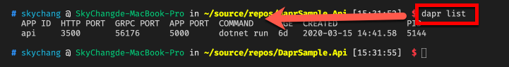</p>
<p>接著，我們用 Postman，簡單測試一下，我們先直接打 <a href="http://localhost:5000/api/orders" target="_blank" rel="noopener">http://localhost:5000/api/orders</a> 這個位置，目前這就是直接去呼叫 ASP.NET Core 的 API，從下圖可以看到完全沒問題。</p>
<p>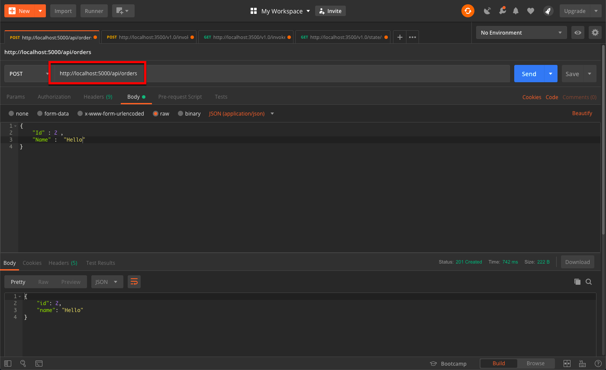</p>
<p>等等，剛剛不是說要透過 Dapr 來呼叫 ASP.NET Core API 嗎！？，對的，所以這邊我們換個位置來呼叫，改用 <a href="http://localhost:3500/v1.0/invoke/api/method/api/orders" target="_blank" rel="noopener">http://localhost:3500/v1.0/invoke/api/method/api/orders</a> 來呼叫，如下圖。</p>
<p>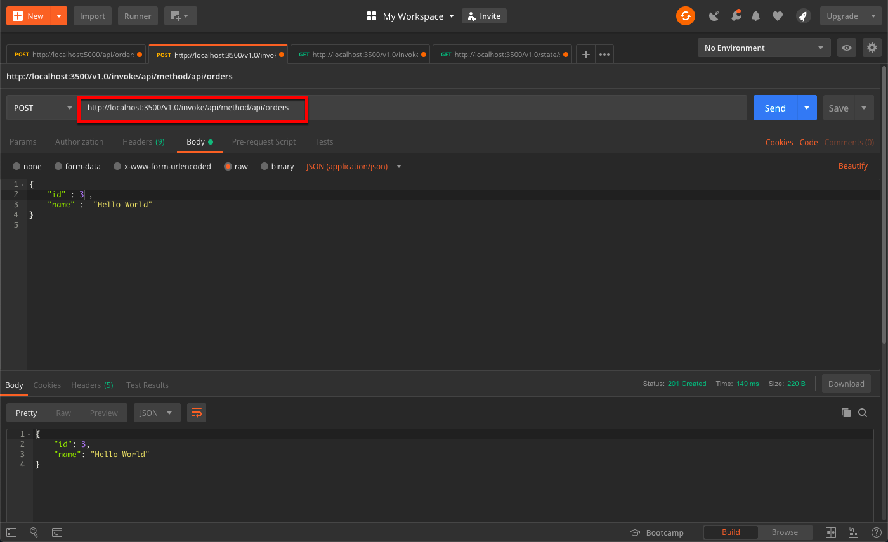</p>
<p>得到的答案是一樣的，但這樣的呼叫過程，其實就透過 Dapr 來呼叫了，而透過 Dapr 的格式，就是 <a href="http://localhost:3500/v1.0/invoke/{app-id}/method/{位置}，其中" target="_blank" rel="noopener">http://localhost:3500/v1.0/invoke/{app-id}/method/{位置}，其中</a> app-id 就是我們剛剛執行指令所給的名稱，而位置會對應到 我們 <a href="http://localhost:5000/api/orders" target="_blank" rel="noopener">http://localhost:5000/api/orders</a> 裡面的 api/orders</p>
<p>另外，當執行 Dapr run 的時候，他也會在原始碼這邊建立 components 的資料夾，裡面兩個 YAML 就會描述 statestore 這個名稱等資訊。</p>
<p>最後，因為我們沒有寫 Get 方法到 ASP.NET Core API 裡面，但我們也可以直接調用 Dapr 來取得我們剛剛 Post 的資料</p>
<p>我們呼叫 <a href="http://localhost:3500/v1.0/state/statestore/order" target="_blank" rel="noopener">http://localhost:3500/v1.0/state/statestore/order</a> ，其中 statestore 這個名稱的定義，就是我們上面提到，當 Dapr 建構時，自動幫我們加的 YAML ，裡面有定義 statestore 這個名稱，而 order 要注意，我們調用這個 URL，並非是透過 Dapr 存取 ASP.NET API，而是透過 Dapr 直接存取 Redis，所以這邊的 order ，並不是我們上面提的 ASP.NET Core 位置，而是程式碼裡面定義的這段，我們給了 Key 值，所以這個 order 是對應到我們給的 Key 值。</p>
<figure class="highlight csharp"><table><tr><td class="gutter"><pre><span class="line">1</span><br></pre></td><td class="code"><pre><span class="line"><span class="keyword">new</span> &#123; Key = <span class="string">"order"</span> , Value = dto &#125;</span><br></pre></td></tr></table></figure>

<p>簡單的說，這個網址，就是透過 Darp 去 Redis 撈資料..</p>
<p>打出來的結果如下。</p>
<p>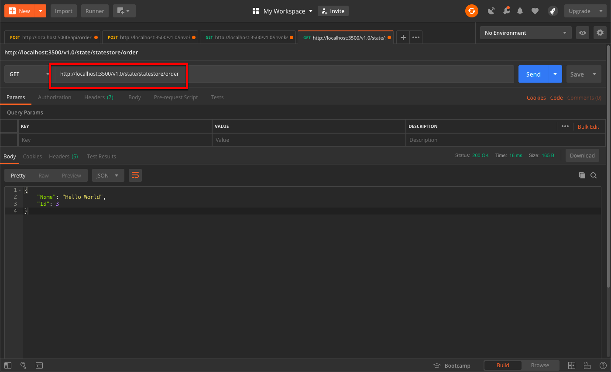</p>
<p>當然，正常流程應該是，外部的應用程式去 call Dapr，然後讓 Dapr 轉到 ASP.NET Core API 的 Get Order 方法，再讓 Order 方法去調用 Dapr 的 statestore 的位置來取得，然後再由 Get Order 回覆給 Dapr，Dapr 在回覆給外部的應用程式。</p>
<p>所以我們這邊加上 ASP.NET Core Get Order 方法，可想而知，我們就是透過 <a href="http://localhost:3500/v1.0/state/statestore/order" target="_blank" rel="noopener">http://localhost:3500/v1.0/state/statestore/order</a> 這個 Dapr 提供的街口取得資料。</p>
<figure class="highlight csharp"><table><tr><td class="gutter"><pre><span class="line">1</span><br><span class="line">2</span><br><span class="line">3</span><br><span class="line">4</span><br><span class="line">5</span><br><span class="line">6</span><br><span class="line">7</span><br><span class="line">8</span><br><span class="line">9</span><br><span class="line">10</span><br><span class="line">11</span><br><span class="line">12</span><br><span class="line">13</span><br><span class="line">14</span><br></pre></td><td class="code"><pre><span class="line">[<span class="meta">HttpGet</span>]</span><br><span class="line"><span class="function"><span class="keyword">public</span> <span class="keyword">async</span> Task&lt;IActionResult&gt; <span class="title">Get</span>(<span class="params"></span>)</span></span><br><span class="line"><span class="function"></span>&#123;</span><br><span class="line">    <span class="keyword">var</span> client = <span class="keyword">new</span> HttpClient();</span><br><span class="line">    </span><br><span class="line">    <span class="keyword">var</span> result = <span class="keyword">await</span> client.GetAsync(<span class="string">$"<span class="subst">&#123;_stateUrl&#125;</span>/order"</span>);</span><br><span class="line"></span><br><span class="line">    result.EnsureSuccessStatusCode();</span><br><span class="line">    <span class="keyword">var</span> resp = <span class="keyword">await</span> result.Content.ReadAsStringAsync();</span><br><span class="line"></span><br><span class="line">    <span class="keyword">var</span> order = JsonSerializer.Deserialize&lt;Order&gt;(resp);</span><br><span class="line"></span><br><span class="line">    <span class="keyword">return</span> Ok(order);</span><br><span class="line">&#125;</span><br></pre></td></tr></table></figure>

<p>最後，我們透過 <a href="http://localhost:3500/v1.0/invoke/api/method/api/orders" target="_blank" rel="noopener">http://localhost:3500/v1.0/invoke/api/method/api/orders</a> 這個 Dapr 接口，去調用 ASP.NET Core 的 Get Order 方法，而 ASP.NET Core Get Order 方法，會再去調用 Dapr 取得 statestore，然後最終由 Dapr 返回。</p>
<p>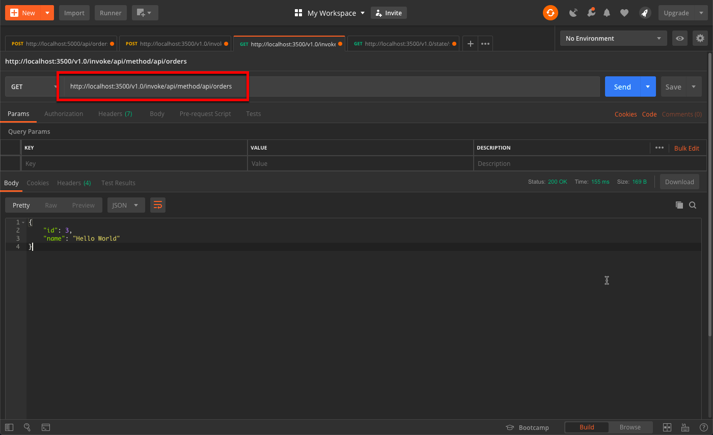</p>
<p>總之，任何的輸入輸出都是靠 Dapr 來管理。</p>
<h2 id="透過指令方式"><a href="#透過指令方式" class="headerlink" title="透過指令方式"></a>透過指令方式</h2><p>除了上面用 Postman 工具外，其實也支援指令方式。請注意，MacOS 和 Powershell 的指令可能會略有不同。底下為 MacOS。</p>
<p>塞入一筆資料</p>
<figure class="highlight bash"><table><tr><td class="gutter"><pre><span class="line">1</span><br></pre></td><td class="code"><pre><span class="line">dapr invoke --app-id api  --method <span class="string">'api/orders'</span> --payload <span class="string">'&#123; "id": 41, "name":"Hello World2" &#125;'</span></span><br></pre></td></tr></table></figure>

<p>取得資料</p>
<figure class="highlight bash"><table><tr><td class="gutter"><pre><span class="line">1</span><br></pre></td><td class="code"><pre><span class="line">curl http://localhost:3500/v1.0/invoke/api/method/api/orders</span><br></pre></td></tr></table></figure>

<p>完成如下</p>
<p>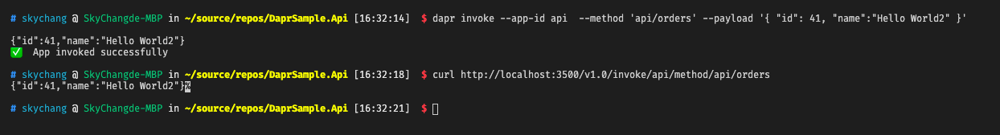</p>
<h2 id="加入一個-WorkRole"><a href="#加入一個-WorkRole" class="headerlink" title="加入一個 WorkRole"></a>加入一個 WorkRole</h2><p>接下來，我們要繼續完成官方的練習一，從下圖可以看到，我們完成了右半邊，也就是 Node.js 這邊的練習，接下來，我們要寫一個定時器，每過一段時間，並會修改 Order 的資料。</p>
<p></p>
<p>首先，我們要完成上圖 Python 的事情，但我們這邊還是使用 C# 改寫。我們使用 ASP.NET Core 3 的新功能 Worker Service 樣板。<br>然後修改底下的執行，這代表著每秒鐘會去呼叫 我們 API 方的 Dapr，然後加一筆 Order 進去。</p>
<p>請注意，你會發現，我們不使用 ASP.NET Core 原生的 API 位置，而是透過 Dapr 來呼叫 ASP.NET Core API，這意味著說，你可以不需要知道 原來 API 的 URL，你只需要透過 Dapr 就可以呼叫到 ASP.NET Core API。</p>
<figure class="highlight csharp"><table><tr><td class="gutter"><pre><span class="line">1</span><br><span class="line">2</span><br><span class="line">3</span><br><span class="line">4</span><br><span class="line">5</span><br><span class="line">6</span><br><span class="line">7</span><br><span class="line">8</span><br><span class="line">9</span><br><span class="line">10</span><br><span class="line">11</span><br><span class="line">12</span><br><span class="line">13</span><br><span class="line">14</span><br><span class="line">15</span><br><span class="line">16</span><br><span class="line">17</span><br><span class="line">18</span><br><span class="line">19</span><br><span class="line">20</span><br><span class="line">21</span><br><span class="line">22</span><br><span class="line">23</span><br><span class="line">24</span><br></pre></td><td class="code"><pre><span class="line"><span class="function"><span class="keyword">protected</span> <span class="keyword">override</span> <span class="keyword">async</span> Task <span class="title">ExecuteAsync</span>(<span class="params">CancellationToken stoppingToken</span>)</span></span><br><span class="line"><span class="function"></span>&#123;</span><br><span class="line">    _logger.LogInformation(<span class="string">"Start Worker"</span>);</span><br><span class="line"></span><br><span class="line">    <span class="keyword">var</span> id = <span class="number">0</span>;</span><br><span class="line">    <span class="keyword">while</span> (!stoppingToken.IsCancellationRequested)</span><br><span class="line">    &#123;</span><br><span class="line">        id++;</span><br><span class="line">        <span class="keyword">var</span> data = <span class="keyword">new</span> Order()&#123; Id = id, Name = <span class="string">$"Hello Wolrd <span class="subst">&#123;id&#125;</span>"</span> &#125;;</span><br><span class="line"></span><br><span class="line">        <span class="keyword">var</span> client = <span class="keyword">new</span> HttpClient();</span><br><span class="line"></span><br><span class="line">        <span class="keyword">var</span> content = <span class="keyword">new</span> StringContent(JsonSerializer.Serialize(data), Encoding.UTF8, <span class="string">@"application/json"</span>);</span><br><span class="line"></span><br><span class="line">        <span class="keyword">var</span> result = <span class="keyword">await</span> client.PostAsync(<span class="string">"http://localhost:3500/v1.0/invoke/api/method/api/orders"</span>, content);</span><br><span class="line"></span><br><span class="line">        result.EnsureSuccessStatusCode();</span><br><span class="line"></span><br><span class="line">        _logger.LogInformation(<span class="string">"Worker running at: &#123;time&#125;"</span>, DateTimeOffset.Now);</span><br><span class="line">        _logger.LogInformation(<span class="string">$"Add Order id = <span class="subst">&#123;id&#125;</span>"</span> );</span><br><span class="line"></span><br><span class="line">        <span class="keyword">await</span> Task.Delay(<span class="number">1000</span>, stoppingToken);</span><br><span class="line">    &#125;</span><br><span class="line">&#125;</span><br></pre></td></tr></table></figure>

<p>完成 Code 之後，我們可以下以下指令，只是這次我們名稱改為 Worker，而不用特別設定 Port。</p>
<figure class="highlight bash"><table><tr><td class="gutter"><pre><span class="line">1</span><br></pre></td><td class="code"><pre><span class="line">dapr run --app-id worker dotnet run</span><br></pre></td></tr></table></figure>

<p>如下圖，完成後，他每秒都會更新 Order 一次。</p>
<p>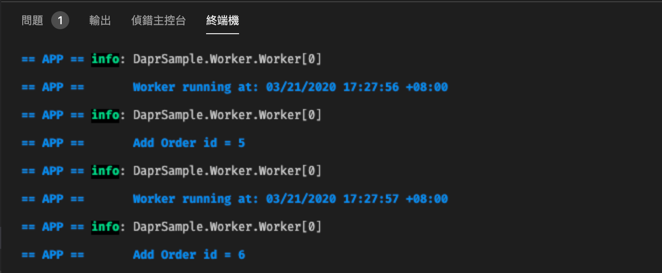</p>
<p>我們也可以用 Postman 看結果。</p>
<p>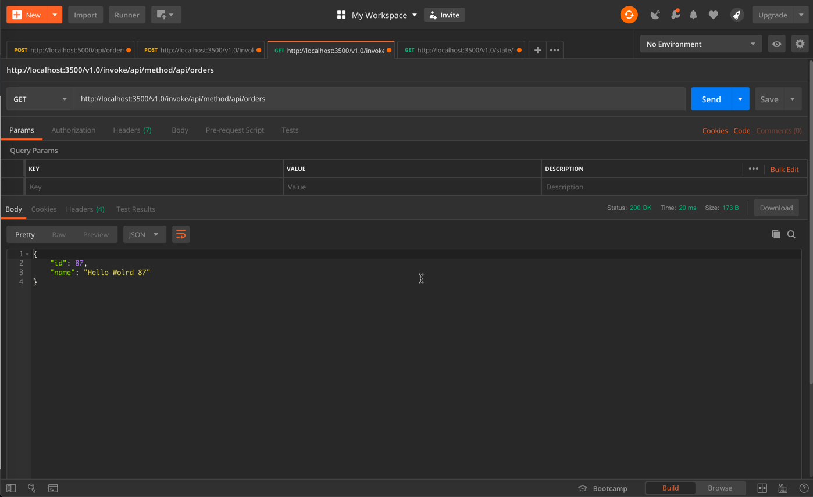</p>
<p>到此，我們就完成了 Dapr 的第一個練習。</p>
<p>但不知道大家由沒有注意，其實不用把 Worker 的 Dapr run 起來，也是可以直接透過 <a href="http://localhost:3500/v1.0/invoke/api/method/api/orders" target="_blank" rel="noopener">http://localhost:3500/v1.0/invoke/api/method/api/orders</a> 呼叫。那透過 Dapr run 起來的 Worker，為什麼也是直接打 <a href="http://localhost:3500/v1.0/invoke/api/method/api/orders" target="_blank" rel="noopener">http://localhost:3500/v1.0/invoke/api/method/api/orders</a> 呢？這樣和直接呼叫有什麼不同。</p>
<p>其實小弟這邊也有點困惑，但官方的解釋是說，當 Worker run 起 Dapr 的時候，打 API 的 Dapr ( <a href="http://localhost:3500/v1.0/invoke/api/method/api/orders" target="_blank" rel="noopener">http://localhost:3500/v1.0/invoke/api/method/api/orders</a> ) 其實還是有經過 Worker 的 Dapr 的，所以當我們使用 Dapr run Worker 這個應用的時候，其實背後 Dapr 就會在旁邊監控與託管。</p>
<p>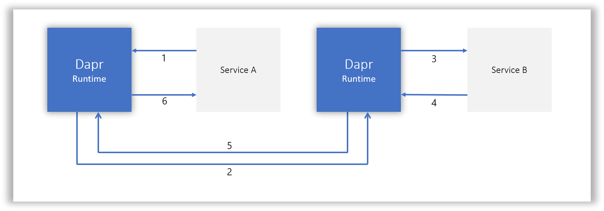</p>
<p>總之，暫時也只能相信他了 XDDDD，如果有錯也請多包涵了。</p>
<h2 id="停止-Dapr"><a href="#停止-Dapr" class="headerlink" title="停止 Dapr"></a>停止 Dapr</h2><p>如果要停止，可以下，就可以停止。</p>
<figure class="highlight bash"><table><tr><td class="gutter"><pre><span class="line">1</span><br></pre></td><td class="code"><pre><span class="line">dapr stop --app-id api</span><br></pre></td></tr></table></figure>

<h2 id="備註"><a href="#備註" class="headerlink" title="備註"></a>備註</h2><p>因為了簡單示範，像 HttpClient 就沒使用 HttpClientFactory 來建立，所以在真實環境，還是要好好注意效能的議題喔。</p>
<h2 id="後記"><a href="#後記" class="headerlink" title="後記"></a>後記</h2><p>這一篇，其實寫的有點久，雖然已概念來說·不算難，但整理資料花了不少時間：但不管怎樣，從這個簡單的練習，就可以看到 Dapr 的強大之處，但 Dapr 其實還有更多功能，後續再讓我們繼續看下去。</p>
<h2 id="參考資料"><a href="#參考資料" class="headerlink" title="參考資料"></a>參考資料</h2><ul>
<li><a href="https://dapr.io/" target="_blank" rel="noopener">https://dapr.io/</a></li>
<li><a href="https://github.com/dapr/docs/tree/master/overview" target="_blank" rel="noopener">https://github.com/dapr/docs/tree/master/overview</a></li>
<li><a href="https://github.com/dapr/docs/tree/master/concepts/service-invocation" target="_blank" rel="noopener">https://github.com/dapr/docs/tree/master/concepts/service-invocation</a></li>
</ul>

      
    </div>

    <div>
      
        
      
    </div>

    <div>
      
        

      
    </div>

    <footer class="post-footer">
      
        <div class="post-tags">
          
            <a href="/tags/Dapr/" rel="tag">#Dapr</a>
          
            <a href="/tags/K8S/" rel="tag">#K8S</a>
          
            <a href="/tags/AKS/" rel="tag">#AKS</a>
          
            <a href="/tags/ASP-NET-Core/" rel="tag">#ASP.NET Core</a>
          
            <a href="/tags/Microservice/" rel="tag">#Microservice</a>
          
        </div>
      

      
        <div class="post-nav">
          <div class="post-nav-next post-nav-item">
            
              <a href="/2020/03/11/Visual-Studio-Task%20Runner%20Explorer%20and%20Nodejs%20version/" rel="next" title="Visual Studio - Task Runner Explorer 和 Node 版本">
                <i class="fa fa-chevron-left"></i> Visual Studio - Task Runner Explorer 和 Node 版本
              </a>
            
          </div>

          <div class="post-nav-prev post-nav-item">
            
              <a href="/2020/03/21/Azure-Create_Azure_Kubernetes_Service/" rel="prev" title="Azure - 建立 Azure Kubernetes Service">
                Azure - 建立 Azure Kubernetes Service <i class="fa fa-chevron-right"></i>
              </a>
            
          </div>
        </div>
      

      
      
    </footer>
  </article>


    <div class="post-spread">
      
    </div>
  </div>


          </div>
          


          
  <div class="comments" id="comments">
    
      <div id="disqus_thread">
        <noscript>
          Please enable JavaScript to view the
          <a href="//disqus.com/?ref_noscript" target="_blank" rel="noopener">comments powered by Disqus.</a>
        </noscript>
      </div>
    
  </div>


        </div>
        
          
  
  <div class="sidebar-toggle">
    <div class="sidebar-toggle-line-wrap">
      <span class="sidebar-toggle-line sidebar-toggle-line-first"></span>
      <span class="sidebar-toggle-line sidebar-toggle-line-middle"></span>
      <span class="sidebar-toggle-line sidebar-toggle-line-last"></span>
    </div>
  </div>

  <aside id="sidebar" class="sidebar">
    <div class="sidebar-inner">

      

      
        <ul class="sidebar-nav motion-element">
          <li class="sidebar-nav-toc sidebar-nav-active" data-target="post-toc-wrap" >
            文章目錄
          </li>
          <li class="sidebar-nav-overview" data-target="site-overview">
            本站概覽
          </li>
        </ul>
      

      <section class="site-overview sidebar-panel ">
        <div class="site-author motion-element" itemprop="author" itemscope itemtype="http://schema.org/Person">
          
          <p class="site-author-name" itemprop="name">Sky Chang</p>
          <p class="site-description motion-element" itemprop="description">雖然是垃圾場，但還是有許多好東西</p>
        </div>
        <nav class="site-state motion-element">
          <div class="site-state-item site-state-posts">
            <a href="/archives">
              <span class="site-state-item-count">354</span>
              <span class="site-state-item-name">文章</span>
            </a>
          </div>

          

          
            <div class="site-state-item site-state-tags">
              <a href="/tags">
                <span class="site-state-item-count">108</span>
                <span class="site-state-item-name">標籤</span>
              </a>
            </div>
          

        </nav>

        

        <div class="links-of-author motion-element">
          
        </div>

        
        

        
        

      </section>

      
        <section class="post-toc-wrap motion-element sidebar-panel sidebar-panel-active">
          <div class="post-toc">
            
              
            
            
              <div class="post-toc-content"><ol class="nav"><li class="nav-item nav-level-2"><a class="nav-link" href="#前言"><span class="nav-number">1.</span> <span class="nav-text">前言</span></a></li><li class="nav-item nav-level-2"><a class="nav-link" href="#Dapr"><span class="nav-number">2.</span> <span class="nav-text">Dapr</span></a><ol class="nav-child"><li class="nav-item nav-level-3"><a class="nav-link" href="#Dapr-的功能"><span class="nav-number">2.1.</span> <span class="nav-text">Dapr 的功能</span></a></li><li class="nav-item nav-level-3"><a class="nav-link" href="#Dapr-和-Sidecar"><span class="nav-number">2.2.</span> <span class="nav-text">Dapr 和 Sidecar</span></a></li></ol></li><li class="nav-item nav-level-2"><a class="nav-link" href="#Dapr-環境準備"><span class="nav-number">3.</span> <span class="nav-text">Dapr 環境準備</span></a><ol class="nav-child"><li class="nav-item nav-level-3"><a class="nav-link" href="#安裝-Dapr-CLI"><span class="nav-number">3.1.</span> <span class="nav-text">安裝 Dapr CLI</span></a></li><li class="nav-item nav-level-3"><a class="nav-link" href="#安裝標準環境"><span class="nav-number">3.2.</span> <span class="nav-text">安裝標準環境</span></a></li></ol></li><li class="nav-item nav-level-2"><a class="nav-link" href="#來寫一個-Hello-World-吧"><span class="nav-number">4.</span> <span class="nav-text">來寫一個 Hello World 吧</span></a></li><li class="nav-item nav-level-2"><a class="nav-link" href="#透過指令方式"><span class="nav-number">5.</span> <span class="nav-text">透過指令方式</span></a></li><li class="nav-item nav-level-2"><a class="nav-link" href="#加入一個-WorkRole"><span class="nav-number">6.</span> <span class="nav-text">加入一個 WorkRole</span></a></li><li class="nav-item nav-level-2"><a class="nav-link" href="#停止-Dapr"><span class="nav-number">7.</span> <span class="nav-text">停止 Dapr</span></a></li><li class="nav-item nav-level-2"><a class="nav-link" href="#備註"><span class="nav-number">8.</span> <span class="nav-text">備註</span></a></li><li class="nav-item nav-level-2"><a class="nav-link" href="#後記"><span class="nav-number">9.</span> <span class="nav-text">後記</span></a></li><li class="nav-item nav-level-2"><a class="nav-link" href="#參考資料"><span class="nav-number">10.</span> <span class="nav-text">參考資料</span></a></li></ol></div>
            
          </div>
        </section>
      

    </div>
  </aside>


        
      </div>
    </main>

    <footer id="footer" class="footer">
      <div class="footer-inner">
        <div class="copyright" >
  
  &copy; 
  <span itemprop="copyrightYear">2020</span>
  <span class="with-love">
    <i class="fa fa-heart"></i>
  </span>
  <span class="author" itemprop="copyrightHolder">Sky Chang</span>
</div>

<div class="powered-by">
  由 <a class="theme-link" href="http://hexo.io" target="_blank" rel="noopener">Hexo</a> 強力驅動
</div>

<div class="theme-info">
  主題 -
  <a class="theme-link" href="https://github.com/iissnan/hexo-theme-next" target="_blank" rel="noopener">
    NexT.Mist
  </a>
</div>

        

        
      </div>
    </footer>

    <div class="back-to-top">
      <i class="fa fa-arrow-up"></i>
    </div>
  </div>

  

<script type="text/javascript">
  if (Object.prototype.toString.call(window.Promise) !== '[object Function]') {
    window.Promise = null;
  }
</script>


  


  
  <script type="text/javascript" src="/vendors/jquery/index.js?v=2.1.3"></script>

  
  <script type="text/javascript" src="/vendors/fastclick/lib/fastclick.min.js?v=1.0.6"></script>

  
  <script type="text/javascript" src="/vendors/jquery_lazyload/jquery.lazyload.js?v=1.9.7"></script>

  
  <script type="text/javascript" src="/vendors/velocity/velocity.min.js?v=1.2.1"></script>

  
  <script type="text/javascript" src="/vendors/velocity/velocity.ui.min.js?v=1.2.1"></script>

  
  <script type="text/javascript" src="/vendors/fancybox/source/jquery.fancybox.pack.js?v=2.1.5"></script>


  


  <script type="text/javascript" src="/js/src/utils.js?v=5.0.1"></script>

  <script type="text/javascript" src="/js/src/motion.js?v=5.0.1"></script>


  
  

  
  <script type="text/javascript" src="/js/src/scrollspy.js?v=5.0.1"></script>
<script type="text/javascript" src="/js/src/post-details.js?v=5.0.1"></script>


  


  <script type="text/javascript" src="/js/src/bootstrap.js?v=5.0.1"></script>


  


  

    <script type="text/javascript">
      var disqus_shortname = 'skychang';
      var disqus_identifier = '2020/03/13/Dapr-Hello_Dapr/';
      var disqus_title = 'Dapr - Hello Dapr';
      var disqus_url = 'http://skychang.github.io/2020/03/13/Dapr-Hello_Dapr/';

      function run_disqus_script(disqus_script){
        var dsq = document.createElement('script');
        dsq.type = 'text/javascript';
        dsq.async = true;
        dsq.src = '//' + disqus_shortname + '.disqus.com/' + disqus_script;
        (document.getElementsByTagName('head')[0] || document.getElementsByTagName('body')[0]).appendChild(dsq);
      }

      run_disqus_script('count.js');
      
        run_disqus_script('embed.js');
      
    </script>
  


  
  
  

  

  

</body>
</html>
